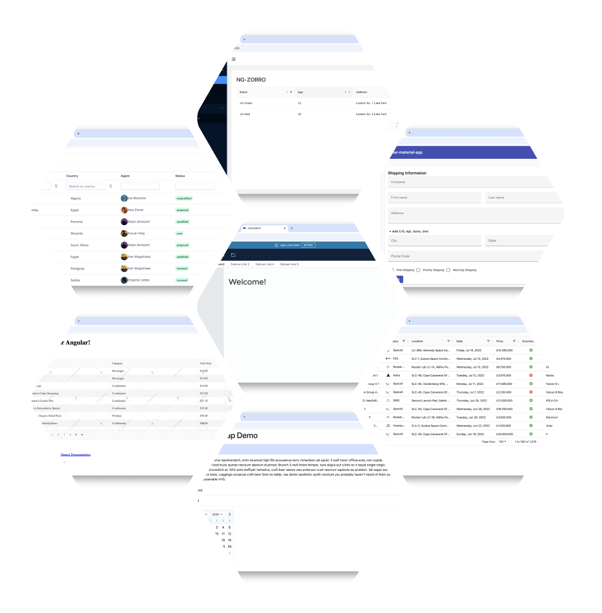

Component Libs
Applies to
Native Federation is tested with several well-known Angular UI component libraries to ensure broad compatibility across the ecosystem.
Demo Repository
The demo repository compiles sample applications built with popular Angular UI libraries using Native Federation. This verifies that Native Federation works seamlessly with these libraries in real-world scenarios.

Try It Yourself
Clone the repository and run any of the included demo apps:
git clone https://github.com/manfredsteyer/nf-test.git
cd nf-test
npm iThis repository is primarily for compatibility testing. For a step-by-step introduction to Native Federation, see the Tutorial or the Example.